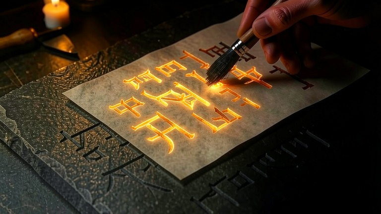
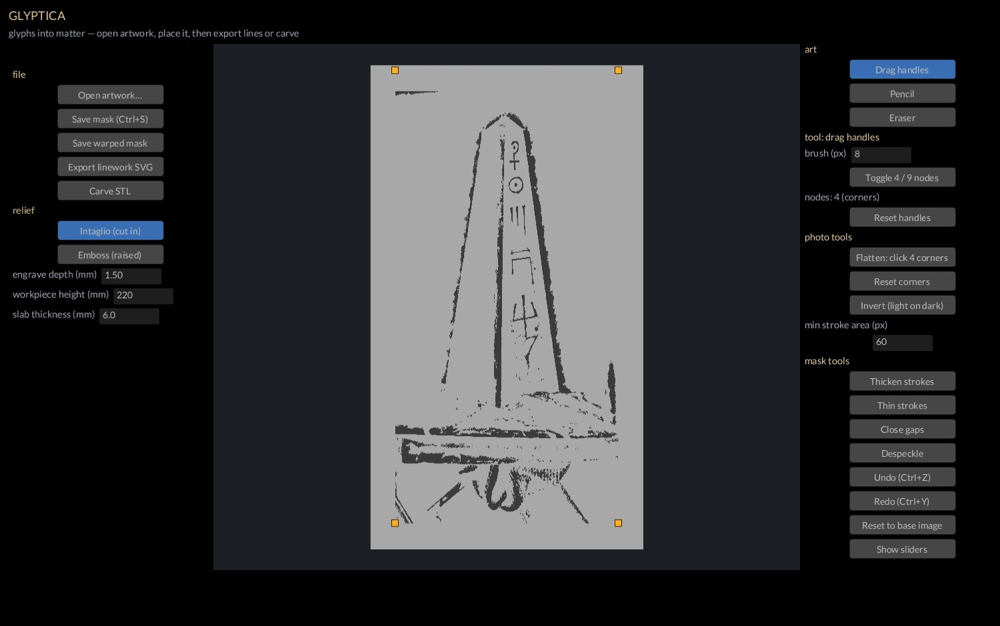

Glyptics: the old art of cutting figures into stone — seals, gems, the sigils on a monument. Glyptica takes a drawing on paper and makes it a thing a machine can cut or carve.
Glyphs into matter — artwork to cut lines and carved relief.
Glyptica is the artwork lane. Bring in a drawing, a rubbing, or a phone photo of a page; flatten it, pull the linework off, clean it, place it. Out come SVG lines for a laser or plasma cutter and a relief slab STL in the art’s own shape, ready to print or to boolean onto any part in Structor.
It is the module that turned a thirty-year-old pencil drawing into the sigils carved on the Obelisk: photograph, rectify, pull the linework, clean it, and hand it on to be embossed.
Debian 13 / Ubuntu 24.04+ — install with sudo apt install ./glyptica_0.1.0_amd64.deb
All modules and docs: https://github.com/3DJ77/Livyatan
